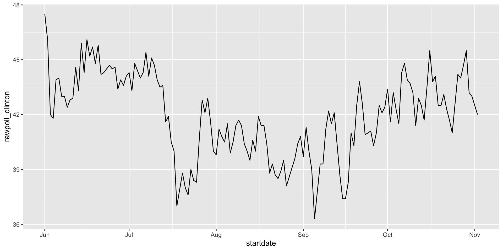

[1] "2016-11-03" "2016-11-01" "2016-11-02" "2016-11-04" "2016-11-03"
[6] "2016-11-03"2026-09-21
We have described three main types of vectors: numeric, character, and logical.
When analyzing data, we often encounter variables that are dates.
Although we can represent a date with a string, for example November 2, 2017, once we pick a reference day, referred to as the epoch by computer programmers, they can be converted to numbers by calculating the number of days since the epoch.
In R and Unix, the epoch is defined as January 1, 1970.
If I tell you it’s November 2, 2017, you know what this means immediately.
If I tell you it’s day 17,204, you will be quite confused.
Similar problems arise with times and even more complications can appear due to time zones.
For this reason, R defines a data type just for dates and times.
[1] "2016-11-03" "2016-11-01" "2016-11-02" "2016-11-04" "2016-11-03"
[6] "2016-11-03"as.Date converts characters into dates.
So to see that the epoch is day 0 we can type.

ggplot offers convenient functions to change labels:
polls_us_election_2016 |>
filter(startdate >= make_date(2016, 6, 1)) |>
filter(pollster == "Ipsos" & state == "U.S.") |>
ggplot(aes(startdate, rawpoll_clinton)) +
geom_line() +
scale_x_date(date_breaks = "2 weeks", date_labels = "%b %d") +
geom_vline(xintercept = as.Date("2016-10-28"), linetype = "dashed")year, month and day extract those values:# A tibble: 10 × 4
date month day year
<date> <dbl> <int> <dbl>
1 2016-05-31 5 31 2016
2 2016-08-08 8 8 2016
3 2016-08-19 8 19 2016
4 2016-09-22 9 22 2016
5 2016-09-27 9 27 2016
6 2016-10-12 10 12 2016
7 2016-10-24 10 24 2016
8 2016-10-26 10 26 2016
9 2016-10-29 10 29 2016
10 2016-10-30 10 30 2016Another useful set of functions are the parsers that convert strings into dates.
The function ymd assumes the dates are in the format YYYY-MM-DD and tries to parse as well as possible.
A further complication comes from the fact that dates often come in different formats in which the order of year, month, and day are different.
The preferred format is to show year (with all four digits), month (two digits), and then day, or what is called the ISO 8601.
Specifically we use YYYY-MM-DD so that if we order the string, it will be ordered by date.
You can see the function ymd returns them in this format.
But, what if you encounter dates such as “09/01/02”? This could be September 1, 2002 or January 2, 2009 or January 9, 2002.
In these cases, examining the entire vector of dates will help you determine what format it is by process of elimination.
Once you know, you can use the many parses provided by lubridate.
For example, if the string is:
ymd function assumes the first entry is the year, the second is the month, and the third is the day, so it converts it to:mdy function assumes the first entry is the month, then the day, then the year:The lubridate package provides a function for every possibility.
Here is the other common one:
The lubridate package is also useful for dealing with times.
In base R, you can get the current time typing Sys.time().
The lubridate package provides a slightly more advanced function, now, that permits you to define the time zone:
[1] "Africa/Abidjan" "Africa/Accra"
[3] "Africa/Addis_Ababa" "Africa/Algiers"
[5] "Africa/Asmara" "Africa/Asmera"
[7] "Africa/Bamako" "Africa/Bangui"
[9] "Africa/Banjul" "Africa/Bissau"
[11] "Africa/Blantyre" "Africa/Brazzaville"
[13] "Africa/Bujumbura" "Africa/Cairo"
[15] "Africa/Casablanca" "Africa/Ceuta"
[17] "Africa/Conakry" "Africa/Dakar"
[19] "Africa/Dar_es_Salaam" "Africa/Djibouti"
[21] "Africa/Douala" "Africa/El_Aaiun"
[23] "Africa/Freetown" "Africa/Gaborone"
[25] "Africa/Harare" "Africa/Johannesburg"
[27] "Africa/Juba" "Africa/Kampala"
[29] "Africa/Khartoum" "Africa/Kigali"
[31] "Africa/Kinshasa" "Africa/Lagos"
[33] "Africa/Libreville" "Africa/Lome"
[35] "Africa/Luanda" "Africa/Lubumbashi"
[37] "Africa/Lusaka" "Africa/Malabo"
[39] "Africa/Maputo" "Africa/Maseru"
[41] "Africa/Mbabane" "Africa/Mogadishu"
[43] "Africa/Monrovia" "Africa/Nairobi"
[45] "Africa/Ndjamena" "Africa/Niamey"
[47] "Africa/Nouakchott" "Africa/Ouagadougou"
[49] "Africa/Porto-Novo" "Africa/Sao_Tome"
[51] "Africa/Timbuktu" "Africa/Tripoli"
[53] "Africa/Tunis" "Africa/Windhoek"
[55] "America/Adak" "America/Anchorage"
[57] "America/Anguilla" "America/Antigua"
[59] "America/Araguaina" "America/Argentina/Buenos_Aires"
[61] "America/Argentina/Catamarca" "America/Argentina/ComodRivadavia"
[63] "America/Argentina/Cordoba" "America/Argentina/Jujuy"
[65] "America/Argentina/La_Rioja" "America/Argentina/Mendoza"
[67] "America/Argentina/Rio_Gallegos" "America/Argentina/Salta"
[69] "America/Argentina/San_Juan" "America/Argentina/San_Luis"
[71] "America/Argentina/Tucuman" "America/Argentina/Ushuaia"
[73] "America/Aruba" "America/Asuncion"
[75] "America/Atikokan" "America/Atka"
[77] "America/Bahia" "America/Bahia_Banderas"
[79] "America/Barbados" "America/Belem"
[81] "America/Belize" "America/Blanc-Sablon"
[83] "America/Boa_Vista" "America/Bogota"
[85] "America/Boise" "America/Buenos_Aires"
[87] "America/Cambridge_Bay" "America/Campo_Grande"
[89] "America/Cancun" "America/Caracas"
[91] "America/Catamarca" "America/Cayenne"
[93] "America/Cayman" "America/Chicago"
[95] "America/Chihuahua" "America/Ciudad_Juarez"
[97] "America/Coral_Harbour" "America/Cordoba"
[99] "America/Costa_Rica" "America/Coyhaique"
[101] "America/Creston" "America/Cuiaba"
[103] "America/Curacao" "America/Danmarkshavn"
[105] "America/Dawson" "America/Dawson_Creek"
[107] "America/Denver" "America/Detroit"
[109] "America/Dominica" "America/Edmonton"
[111] "America/Eirunepe" "America/El_Salvador"
[113] "America/Ensenada" "America/Fort_Nelson"
[115] "America/Fort_Wayne" "America/Fortaleza"
[117] "America/Glace_Bay" "America/Godthab"
[119] "America/Goose_Bay" "America/Grand_Turk"
[121] "America/Grenada" "America/Guadeloupe"
[123] "America/Guatemala" "America/Guayaquil"
[125] "America/Guyana" "America/Halifax"
[127] "America/Havana" "America/Hermosillo"
[129] "America/Indiana/Indianapolis" "America/Indiana/Knox"
[131] "America/Indiana/Marengo" "America/Indiana/Petersburg"
[133] "America/Indiana/Tell_City" "America/Indiana/Vevay"
[135] "America/Indiana/Vincennes" "America/Indiana/Winamac"
[137] "America/Indianapolis" "America/Inuvik"
[139] "America/Iqaluit" "America/Jamaica"
[141] "America/Jujuy" "America/Juneau"
[143] "America/Kentucky/Louisville" "America/Kentucky/Monticello"
[145] "America/Knox_IN" "America/Kralendijk"
[147] "America/La_Paz" "America/Lima"
[149] "America/Los_Angeles" "America/Louisville"
[151] "America/Lower_Princes" "America/Maceio"
[153] "America/Managua" "America/Manaus"
[155] "America/Marigot" "America/Martinique"
[157] "America/Matamoros" "America/Mazatlan"
[159] "America/Mendoza" "America/Menominee"
[161] "America/Merida" "America/Metlakatla"
[163] "America/Mexico_City" "America/Miquelon"
[165] "America/Moncton" "America/Monterrey"
[167] "America/Montevideo" "America/Montreal"
[169] "America/Montserrat" "America/Nassau"
[171] "America/New_York" "America/Nipigon"
[173] "America/Nome" "America/Noronha"
[175] "America/North_Dakota/Beulah" "America/North_Dakota/Center"
[177] "America/North_Dakota/New_Salem" "America/Nuuk"
[179] "America/Ojinaga" "America/Panama"
[181] "America/Pangnirtung" "America/Paramaribo"
[183] "America/Phoenix" "America/Port_of_Spain"
[185] "America/Port-au-Prince" "America/Porto_Acre"
[187] "America/Porto_Velho" "America/Puerto_Rico"
[189] "America/Punta_Arenas" "America/Rainy_River"
[191] "America/Rankin_Inlet" "America/Recife"
[193] "America/Regina" "America/Resolute"
[195] "America/Rio_Branco" "America/Rosario"
[197] "America/Santa_Isabel" "America/Santarem"
[199] "America/Santiago" "America/Santo_Domingo"
[201] "America/Sao_Paulo" "America/Scoresbysund"
[203] "America/Shiprock" "America/Sitka"
[205] "America/St_Barthelemy" "America/St_Johns"
[207] "America/St_Kitts" "America/St_Lucia"
[209] "America/St_Thomas" "America/St_Vincent"
[211] "America/Swift_Current" "America/Tegucigalpa"
[213] "America/Thule" "America/Thunder_Bay"
[215] "America/Tijuana" "America/Toronto"
[217] "America/Tortola" "America/Vancouver"
[219] "America/Virgin" "America/Whitehorse"
[221] "America/Winnipeg" "America/Yakutat"
[223] "America/Yellowknife" "Antarctica/Casey"
[225] "Antarctica/Davis" "Antarctica/DumontDUrville"
[227] "Antarctica/Macquarie" "Antarctica/Mawson"
[229] "Antarctica/McMurdo" "Antarctica/Palmer"
[231] "Antarctica/Rothera" "Antarctica/South_Pole"
[233] "Antarctica/Syowa" "Antarctica/Troll"
[235] "Antarctica/Vostok" "Arctic/Longyearbyen"
[237] "Asia/Aden" "Asia/Almaty"
[239] "Asia/Amman" "Asia/Anadyr"
[241] "Asia/Aqtau" "Asia/Aqtobe"
[243] "Asia/Ashgabat" "Asia/Ashkhabad"
[245] "Asia/Atyrau" "Asia/Baghdad"
[247] "Asia/Bahrain" "Asia/Baku"
[249] "Asia/Bangkok" "Asia/Barnaul"
[251] "Asia/Beirut" "Asia/Bishkek"
[253] "Asia/Brunei" "Asia/Calcutta"
[255] "Asia/Chita" "Asia/Choibalsan"
[257] "Asia/Chongqing" "Asia/Chungking"
[259] "Asia/Colombo" "Asia/Dacca"
[261] "Asia/Damascus" "Asia/Dhaka"
[263] "Asia/Dili" "Asia/Dubai"
[265] "Asia/Dushanbe" "Asia/Famagusta"
[267] "Asia/Gaza" "Asia/Harbin"
[269] "Asia/Hebron" "Asia/Ho_Chi_Minh"
[271] "Asia/Hong_Kong" "Asia/Hovd"
[273] "Asia/Irkutsk" "Asia/Istanbul"
[275] "Asia/Jakarta" "Asia/Jayapura"
[277] "Asia/Jerusalem" "Asia/Kabul"
[279] "Asia/Kamchatka" "Asia/Karachi"
[281] "Asia/Kashgar" "Asia/Kathmandu"
[283] "Asia/Katmandu" "Asia/Khandyga"
[285] "Asia/Kolkata" "Asia/Krasnoyarsk"
[287] "Asia/Kuala_Lumpur" "Asia/Kuching"
[289] "Asia/Kuwait" "Asia/Macao"
[291] "Asia/Macau" "Asia/Magadan"
[293] "Asia/Makassar" "Asia/Manila"
[295] "Asia/Muscat" "Asia/Nicosia"
[297] "Asia/Novokuznetsk" "Asia/Novosibirsk"
[299] "Asia/Omsk" "Asia/Oral"
[301] "Asia/Phnom_Penh" "Asia/Pontianak"
[303] "Asia/Pyongyang" "Asia/Qatar"
[305] "Asia/Qostanay" "Asia/Qyzylorda"
[307] "Asia/Rangoon" "Asia/Riyadh"
[309] "Asia/Saigon" "Asia/Sakhalin"
[311] "Asia/Samarkand" "Asia/Seoul"
[313] "Asia/Shanghai" "Asia/Singapore"
[315] "Asia/Srednekolymsk" "Asia/Taipei"
[317] "Asia/Tashkent" "Asia/Tbilisi"
[319] "Asia/Tehran" "Asia/Tel_Aviv"
[321] "Asia/Thimbu" "Asia/Thimphu"
[323] "Asia/Tokyo" "Asia/Tomsk"
[325] "Asia/Ujung_Pandang" "Asia/Ulaanbaatar"
[327] "Asia/Ulan_Bator" "Asia/Urumqi"
[329] "Asia/Ust-Nera" "Asia/Vientiane"
[331] "Asia/Vladivostok" "Asia/Yakutsk"
[333] "Asia/Yangon" "Asia/Yekaterinburg"
[335] "Asia/Yerevan" "Atlantic/Azores"
[337] "Atlantic/Bermuda" "Atlantic/Canary"
[339] "Atlantic/Cape_Verde" "Atlantic/Faeroe"
[341] "Atlantic/Faroe" "Atlantic/Jan_Mayen"
[343] "Atlantic/Madeira" "Atlantic/Reykjavik"
[345] "Atlantic/South_Georgia" "Atlantic/St_Helena"
[347] "Atlantic/Stanley" "Australia/ACT"
[349] "Australia/Adelaide" "Australia/Brisbane"
[351] "Australia/Broken_Hill" "Australia/Canberra"
[353] "Australia/Currie" "Australia/Darwin"
[355] "Australia/Eucla" "Australia/Hobart"
[357] "Australia/LHI" "Australia/Lindeman"
[359] "Australia/Lord_Howe" "Australia/Melbourne"
[361] "Australia/North" "Australia/NSW"
[363] "Australia/Perth" "Australia/Queensland"
[365] "Australia/South" "Australia/Sydney"
[367] "Australia/Tasmania" "Australia/Victoria"
[369] "Australia/West" "Australia/Yancowinna"
[371] "Brazil/Acre" "Brazil/DeNoronha"
[373] "Brazil/East" "Brazil/West"
[375] "Canada/Atlantic" "Canada/Central"
[377] "Canada/Eastern" "Canada/Mountain"
[379] "Canada/Newfoundland" "Canada/Pacific"
[381] "Canada/Saskatchewan" "Canada/Yukon"
[383] "CET" "Chile/Continental"
[385] "Chile/EasterIsland" "CST6CDT"
[387] "Cuba" "EET"
[389] "Egypt" "Eire"
[391] "EST" "EST5EDT"
[393] "Etc/GMT" "Etc/GMT-0"
[395] "Etc/GMT-1" "Etc/GMT-10"
[397] "Etc/GMT-11" "Etc/GMT-12"
[399] "Etc/GMT-13" "Etc/GMT-14"
[401] "Etc/GMT-2" "Etc/GMT-3"
[403] "Etc/GMT-4" "Etc/GMT-5"
[405] "Etc/GMT-6" "Etc/GMT-7"
[407] "Etc/GMT-8" "Etc/GMT-9"
[409] "Etc/GMT+0" "Etc/GMT+1"
[411] "Etc/GMT+10" "Etc/GMT+11"
[413] "Etc/GMT+12" "Etc/GMT+2"
[415] "Etc/GMT+3" "Etc/GMT+4"
[417] "Etc/GMT+5" "Etc/GMT+6"
[419] "Etc/GMT+7" "Etc/GMT+8"
[421] "Etc/GMT+9" "Etc/GMT0"
[423] "Etc/Greenwich" "Etc/UCT"
[425] "Etc/Universal" "Etc/UTC"
[427] "Etc/Zulu" "Europe/Amsterdam"
[429] "Europe/Andorra" "Europe/Astrakhan"
[431] "Europe/Athens" "Europe/Belfast"
[433] "Europe/Belgrade" "Europe/Berlin"
[435] "Europe/Bratislava" "Europe/Brussels"
[437] "Europe/Bucharest" "Europe/Budapest"
[439] "Europe/Busingen" "Europe/Chisinau"
[441] "Europe/Copenhagen" "Europe/Dublin"
[443] "Europe/Gibraltar" "Europe/Guernsey"
[445] "Europe/Helsinki" "Europe/Isle_of_Man"
[447] "Europe/Istanbul" "Europe/Jersey"
[449] "Europe/Kaliningrad" "Europe/Kiev"
[451] "Europe/Kirov" "Europe/Kyiv"
[453] "Europe/Lisbon" "Europe/Ljubljana"
[455] "Europe/London" "Europe/Luxembourg"
[457] "Europe/Madrid" "Europe/Malta"
[459] "Europe/Mariehamn" "Europe/Minsk"
[461] "Europe/Monaco" "Europe/Moscow"
[463] "Europe/Nicosia" "Europe/Oslo"
[465] "Europe/Paris" "Europe/Podgorica"
[467] "Europe/Prague" "Europe/Riga"
[469] "Europe/Rome" "Europe/Samara"
[471] "Europe/San_Marino" "Europe/Sarajevo"
[473] "Europe/Saratov" "Europe/Simferopol"
[475] "Europe/Skopje" "Europe/Sofia"
[477] "Europe/Stockholm" "Europe/Tallinn"
[479] "Europe/Tirane" "Europe/Tiraspol"
[481] "Europe/Ulyanovsk" "Europe/Uzhgorod"
[483] "Europe/Vaduz" "Europe/Vatican"
[485] "Europe/Vienna" "Europe/Vilnius"
[487] "Europe/Volgograd" "Europe/Warsaw"
[489] "Europe/Zagreb" "Europe/Zaporozhye"
[491] "Europe/Zurich" "Factory"
[493] "GB" "GB-Eire"
[495] "GMT" "GMT-0"
[497] "GMT+0" "GMT0"
[499] "Greenwich" "Hongkong"
[501] "HST" "Iceland"
[503] "Indian/Antananarivo" "Indian/Chagos"
[505] "Indian/Christmas" "Indian/Cocos"
[507] "Indian/Comoro" "Indian/Kerguelen"
[509] "Indian/Mahe" "Indian/Maldives"
[511] "Indian/Mauritius" "Indian/Mayotte"
[513] "Indian/Reunion" "Iran"
[515] "Israel" "Jamaica"
[517] "Japan" "Kwajalein"
[519] "Libya" "MET"
[521] "Mexico/BajaNorte" "Mexico/BajaSur"
[523] "Mexico/General" "MST"
[525] "MST7MDT" "Navajo"
[527] "NZ" "NZ-CHAT"
[529] "Pacific/Apia" "Pacific/Auckland"
[531] "Pacific/Bougainville" "Pacific/Chatham"
[533] "Pacific/Chuuk" "Pacific/Easter"
[535] "Pacific/Efate" "Pacific/Enderbury"
[537] "Pacific/Fakaofo" "Pacific/Fiji"
[539] "Pacific/Funafuti" "Pacific/Galapagos"
[541] "Pacific/Gambier" "Pacific/Guadalcanal"
[543] "Pacific/Guam" "Pacific/Honolulu"
[545] "Pacific/Johnston" "Pacific/Kanton"
[547] "Pacific/Kiritimati" "Pacific/Kosrae"
[549] "Pacific/Kwajalein" "Pacific/Majuro"
[551] "Pacific/Marquesas" "Pacific/Midway"
[553] "Pacific/Nauru" "Pacific/Niue"
[555] "Pacific/Norfolk" "Pacific/Noumea"
[557] "Pacific/Pago_Pago" "Pacific/Palau"
[559] "Pacific/Pitcairn" "Pacific/Pohnpei"
[561] "Pacific/Ponape" "Pacific/Port_Moresby"
[563] "Pacific/Rarotonga" "Pacific/Saipan"
[565] "Pacific/Samoa" "Pacific/Tahiti"
[567] "Pacific/Tarawa" "Pacific/Tongatapu"
[569] "Pacific/Truk" "Pacific/Wake"
[571] "Pacific/Wallis" "Pacific/Yap"
[573] "Poland" "Portugal"
[575] "PRC" "PST8PDT"
[577] "ROC" "ROK"
[579] "Singapore" "Turkey"
[581] "UCT" "Universal"
[583] "US/Alaska" "US/Aleutian"
[585] "US/Arizona" "US/Central"
[587] "US/East-Indiana" "US/Eastern"
[589] "US/Hawaii" "US/Indiana-Starke"
[591] "US/Michigan" "US/Mountain"
[593] "US/Pacific" "US/Samoa"
[595] "UTC" "W-SU"
[597] "WET" "Zulu"
attr(,"Version")
[1] "2026c"The make_date function can be used to quickly create a date object.
For example, to create an date object representing, for example, July 6, 2019 we write:
We can use it to make vectors of dates.
To make a vector of January 1 for the 80s we write:
Another very useful function is round_date.
It can be used to round dates to nearest year, quarter, month, week, day, hour, minutes, or seconds.
You should be aware the there are useful function for computing operations on time such a difftime, time_length, and interval.
We don’t cover it here but be aware that The data.table package includes some of the same functionality as lubridate.